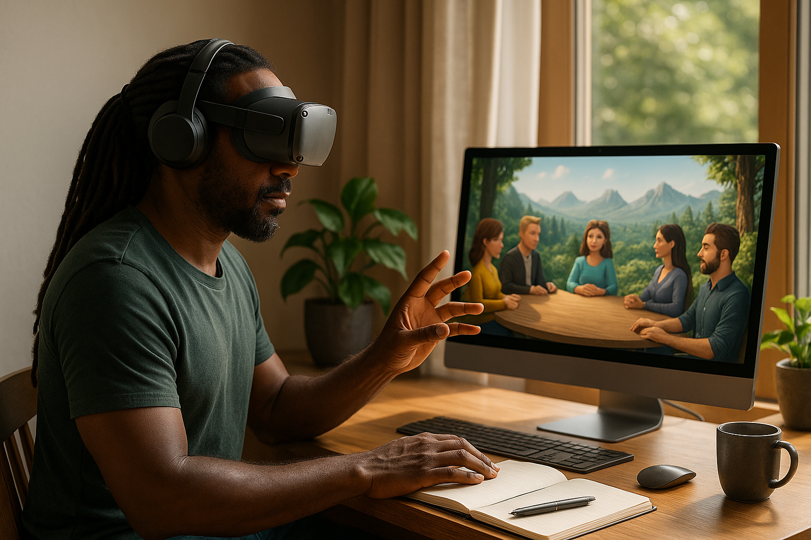
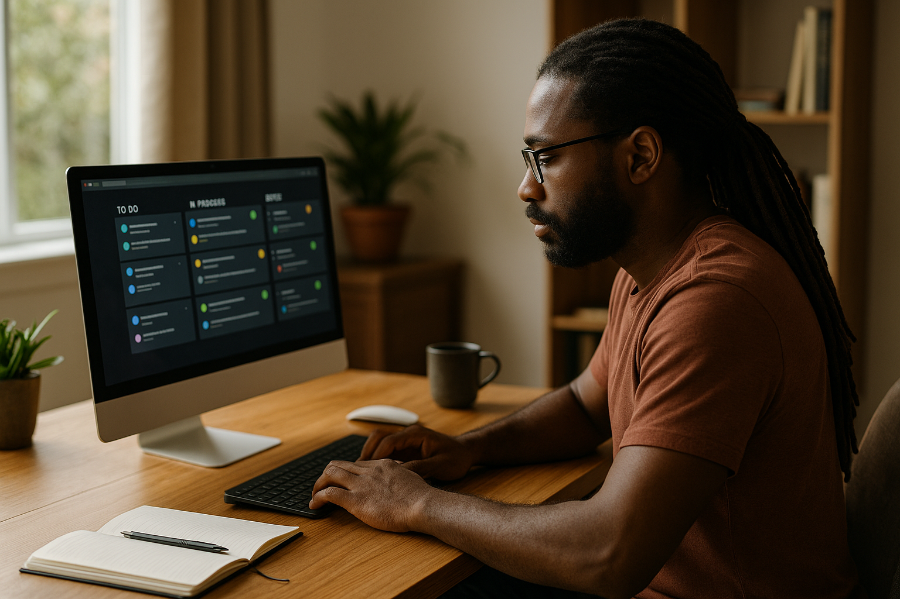
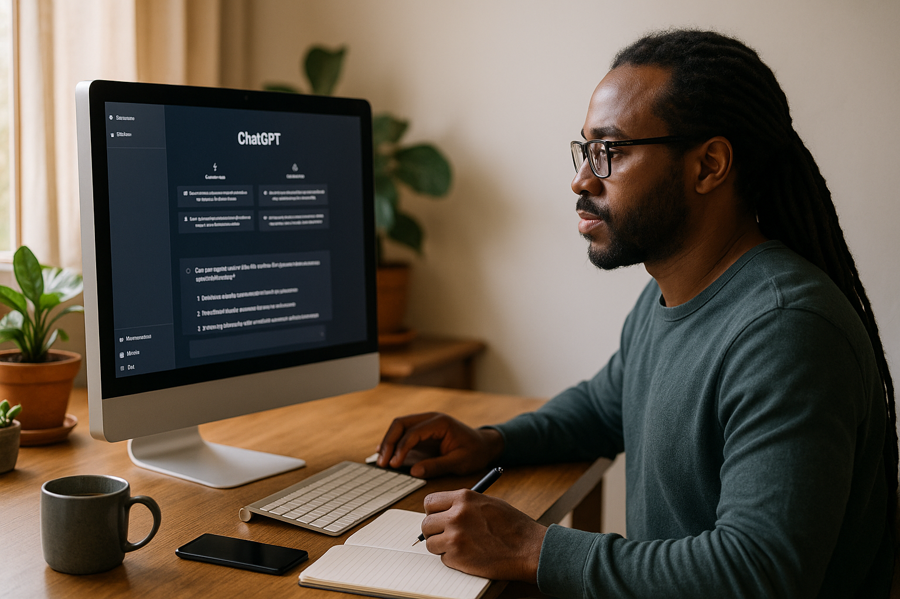
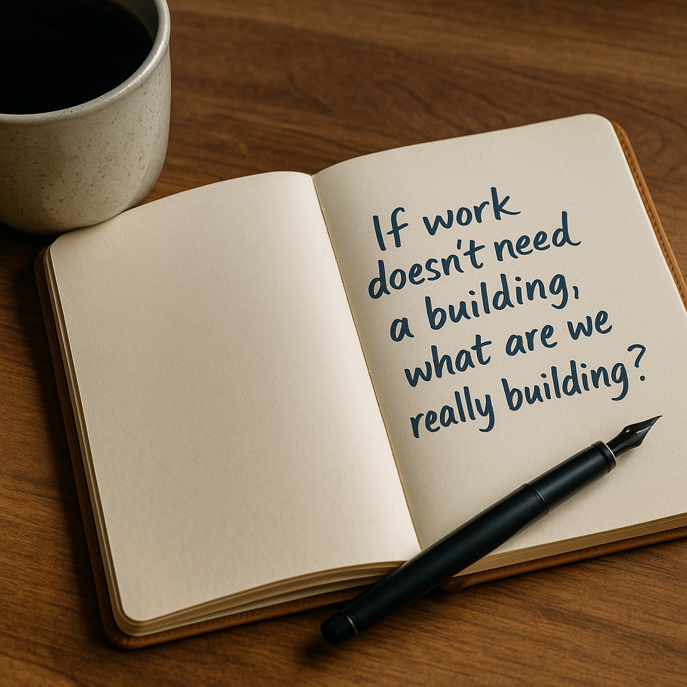

Remember when working from home meant grainy video calls, Slack pings at midnight, and that ever-present question: “Can you hear me now?”
Remote Work 1.0 was about emails and VPNs.
Remote Work 2.0 brought Zoom, Slack, and Notion into the limelight.
But now, the novelty has worn off, and so has our bandwidth, emotionally and otherwise.
Remote Work 3.0 isn’t a tech upgrade.
It’s a mindset shift: from tracking hours to building trust economies, from shallow multitasking to async brilliance, from burnout to deep digital well-being.
🧠 Welcome to the Age of Immersive, Human-Centered Work

Imagine walking into your “office” via a holographic avatar, high-fiving your team in a virtual coworking forest overlooking Mars.
Sounds like sci-fi?
It’s already here.
Platforms like Meta Horizon Workrooms,
Spatial
and Immersed are laying the groundwork for virtual offices that that simulate physical presence through spatial audio, eye tracking, and body language mirroring.
Soon, we might be attending Monday meetings with VR headsets and collaborating through haptic gloves.
This isn’t about escaping reality.
It’s about creating spaces that fuel creativity, no matter where you are.
In the metaverse, watercooler moments don’t disappear. They evolve.
🤝 Trust Economies and Work Without Walls
What happens when managers can’t see their employees?
They start measuring impact instead of hours, and that’s a good thing.
Remote Work 3.0 ushers in reputation-based trust economies, where proof of work trumps presence.
- Think Web3 DAOs replacing rigid org charts
- Blockchain-verified deliverables instead of micromanagement
- Peer-reviewed gig networks—like Uber ratings for copywriters, coders, and consultants
🧰 From Clock-Punching to Flow-Hacking

In this new landscape, when you work matters far less than how you work best.
Async-first workflows aren’t just flexible.
They’re humane.
They allow you to design around your peak creativity windows, your family rhythms, and your mental health cycles.
Tools like:
- Loom for async communication
- Notion for documentation over discussion
- ClickUp for deep-work task tracking
- Descript for editing without the meeting
…are laying the foundation for an outcome-based work culture that respects your brain.
Productivity isn’t presence.
It’s progress on your terms.
🧘🏿♂️ The Quiet Revolution: Mental Health by Design
Remote Work 3.0 isn’t just about output.
It’s about designing a working life that supports your whole self.
And I say that from experience.
In 2024, I worked ten straight months, no breaks, 60+ hours weekly, always online, always “on.”
It was one of my most productive stretches… until I completely collapsed.
In December, I spiraled into a debilitating breakdown, compounded by psychotic episodes, and had to be hospitalized for two weeks.
I never informed my clients. Most moved on.
I lost nearly everything I had built that year.
That was my wake-up call.
Today, I’ve redefined how I work:
- I take midweek mental health breaks when I feel the "wibber gibbers" coming on.
- Weekends are sacred: no screens, no Slack, just books, nature, and quality time with my daughter, Haidee.
- Clients know I don’t reply on weekends, and they respect that boundary.
And guess what?
My creativity has never flowed better.
Boundaries aren’t barriers. They’re bridges to better work.
🌍 A Decentralized, Borderless Workforce
As trust systems mature and collaboration tools evolve, geography matters less, and global equity matters more.
Africa, Southeast Asia, and Latin America are becoming epicenters of remote talent.
Language isn’t a barrier anymore, thanks to AI translation.
Talent flows to value, not to time zones.
In Kenya alone, I’ve seen startups, coders, and creators leapfrog legacy systems to deliver world-class results.
The remote revolution is no longer Western-centric.
It’s planetary.
🤖 AI-Powered Partners, Not Threats

AI won’t replace your job, but the person who uses AI better might.
In Remote Work 3.0, human-AI symbiosis is the name of the game:
- I use AI co-pilots like ChatGPT to brainstorm content ideas in half the time
- AI project managers track milestones, flag bottlenecks, and suggest workarounds
- AI writing assistants help refine messaging without losing my voice or values
We’re not losing control.
We’re gaining clarity.
In the right hands, AI is not a competitor.
It’s a co-creator.
🧱 Barriers to Break
But let’s be honest.
Remote Work 3.0 won’t be equally accessible unless we fight for it.
- 🌐 Digital infrastructure gaps in the Global South
- 🧾 Outdated labor laws that don’t accommodate async work
- 👁️ Surveillance-based cultures clinging to control
- 💸 Freelancer insecurity and lack of portable benefits
✍️ From Burnout to Boundaries: A Writer’s Rebirth
My journey through work-induced psychosis, burnout, and recovery taught me a lesson I now live by:
Remote work is only empowering if it’s intentional.
By disconnecting more often, working with the grain of my mind, and leaning into async strategies, I’ve found peace in productivity and purpose in my pen.
My daughter Haidee doesn't just see a man with a laptop anymore.
She sees a father who’s present, whole, and fulfilled.
💬 Final Reflection: If Work Doesn’t Need a Building, What Are We Really Building?

Remote Work 3.0 is here. It’s immersive, ethical, and human.
So I ask you:
If you could build your ideal working world from scratch, what would it look like?
And more importantly:
What’s stopping you from starting now?